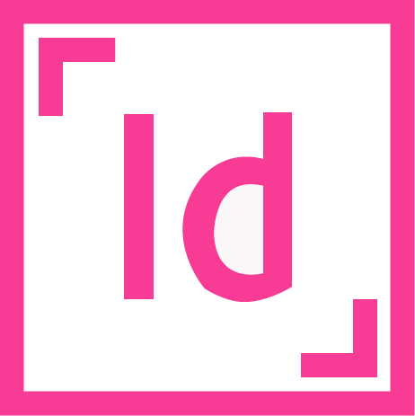
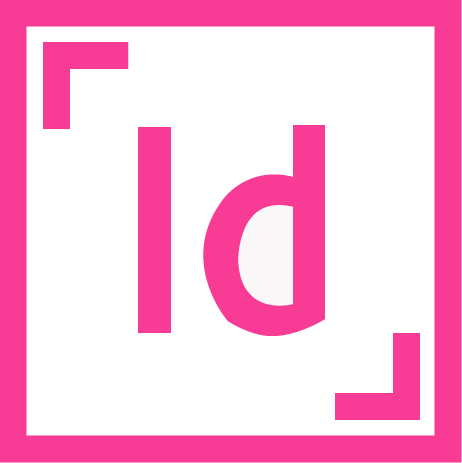
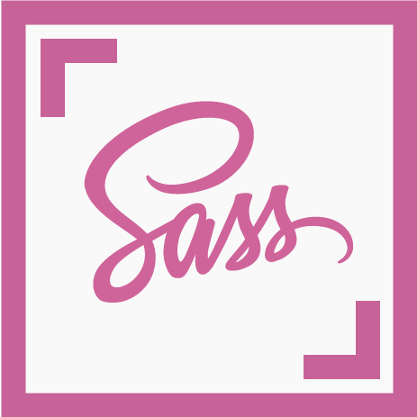
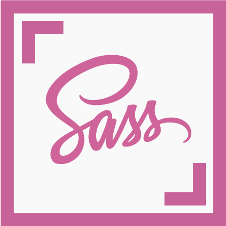

Yaletown Dog Training
Our task as a group for this final project was to create a responsive website for our client using WordPress. Working start to finish through all the techniques we were taught in class, we designed a website that had all the functionality that was agreed upon with our client to meet the needs of her business.


 

 

The Planning
To start off this project we had a meeting with our client in order to better understand her needs and what she liked and didn’t about her current website. Given the quick time frame of this site we jumped right into creating wireframes for our client while going through the UX process to gather some information that would better help us create a great site for her. After wireframes were completed we met with our client to discuss how we thought the website should be laid out and what content was going to be kept, added or removed.
The Design
Through consistent communication with our client we decided on a color scheme and created a style tile for colors, fonts, a custom logo as well as navigation and button styles. After this point we were ready to start on development. We got set up with fresh Wordpress installations on our live site and across the teams local servers. We used Github and Sass for this project in order to get more familiar with version control and .scss while working in a team.
The Code
One section of this project that I am especially proud of is the isotope used to sort the videos. I struggled a lot with this section because initially I didn’t understand how it was working or how tutorials I was watching were supposed to translate to WordPress usage, but after a discussion with my instructor and taking a step back to break everything down step by step I managed to get it working!